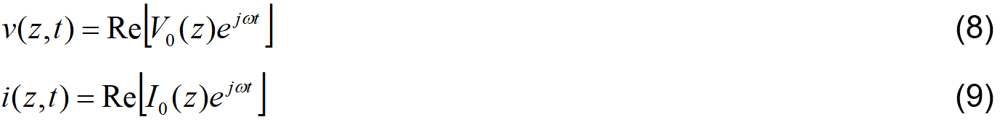

Un cable coaxial está formado por los siguientes elementos:
- Conductor central
- Aislante
- Malla metálica trenzada
- Aislante exterior
Para su análisis, las líneas de transmisión deben ser modeladas mediante un circuito equivalente formado por elementos concentrados:
- Una resistencia en serie por unidad de longitud (en el caso de cable coaxial representa las pérdidas en los conductores).
- Una inductancia en serie por unidad de longitud (en el caso de cable coaxial representa el efecto inductivo presente a lo largo del conductor central).
- Una conductancia en paralelo por unidad de longitud (en el caso de cable coaxial representa las pérdidas en el dieléctrico).
- Un capacitor en paralelo por unidad de longitud (en el caso de cable coaxial capacitancia entre el conductor central y la malla metalica trenzada).
Los elementos del circuito se presentan por unidad de longitud debido a que se representa un fenómeno distribuido con un circuito formado con elementos concentrados.
Las ecuaciones que relacionan voltaje y corriente en el circuito equivalente en el dominio del tiempo están dadas por
Estas ecuaciones son la expresión en el dominio del tiempo de ecuaciones de la línea de transmisión. Ahora, para una excitación sinusoidal en estado estacionario el voltaje y la corriente pueden expresarse como

de donde se deriva el sistema de ecuaciones siguiente
donde
Las soluciones de este sistema de ecuaciones son
Las ecuaciones (12) y (13) proporcionan la siguiente información:
- En una línea de transmisión existen ondas viajeras de voltaje y de corriente.
- Las ondas viajeras tienen componentes que viajan en direciones contrarias.
- La forma en que se atenúa una señal dentro de una línea de transmisión es exponencial con la distancia, esto se muestra en la figura 6.
- La relación entre la onda de voltaje y la de corriente que se mueve en un sentido u otro dentro de una línea de transmisión está dada por
- La forma en que se atenúa una señal dentro de una línea de transmisión es exponencial con la distancia, esto se muestra en la figura 6.
- La relación entre la onda de voltaje y la de corriente que se mueve en un sentido u otro dentro de una línea de transmisión está dada por
- Cuando una señal pasa a través de una línea de transmisión se modifica su amplitud y se genera un corrimiento de fase. Estos fenómenos son representados mediante una cantidad compleja llamada constante de propagación definida por
donde la parte real es la constante de atenuación (expresada en nepers/unidad de longitud y la parte imaginaria es la constante de fase (expresada en radianes/unidad de longitud).
- La forma en que se atenúa una señal dentro de una línea de transmisión es exponencial con la distancia.
- La relación entre la onda de voltaje y la de corriente que se mueve en un sentido u otro dentro de una línea de transmisión está dada por
A esta relación se le conoce como impedancia característica.
- La señal que pasa a través de una línea de transmisión viaja a una velocidad distinta a la de la luz, conocida como velocidad de fase y dada por
- La longitud de onda de la señal que pasa a través de la línea de transmisión se modifica y está dada por
- En un circuito hecho con líneas de transmisión existe reflexión de energía.
- Debido a las reflexiónes existentes en los circuitos con líneas de transmisión se genera una Onda Estacionaria.